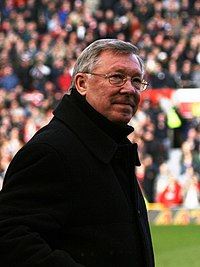
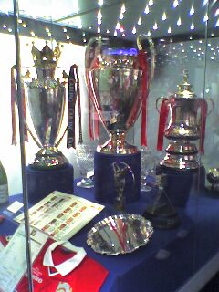
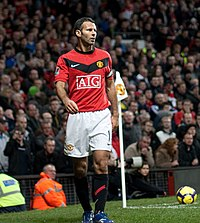

Era Sir Matt Busby (1945–1969)

Alex Ferguson datang dari Aberdeen untuk menggantikan Atkinson dan mengantarkan klub meraih posisi 11. Musim berikutnya yaitu musim 1987–88, United menyelesaikan liga di posisi kedua, dengan Brian McClair yang menjadi pencetak
20 gol liga setelah George Best. United mengalami masa sulit 2 musim berikutnya. Dengan pembelian pemain yang cukup banyak, Ferguson tidak dapat memenuhi harapan suporter. Alex Ferguson telah berada dalam bahaya pemecatan pada
awal 1990, tetapi sebuah gol dari Mark Robins membawa United menang 1–0 atas Nottingham Forest dibabak ketiga Piala FA. Ini membuat Ferguson terselamatkan dan pada akhirnya United memenangkan Piala FA, setelah mengalahkan
Crystal Palace di partai ulang babak final.
United memenangkan Winners' Cup Eropa di 1990–91, mengalahkan juara Spanyol musim itu, Barcelona di final, tetapi mengecewakan di musim berikutnya karena di liga mereka kalah dari saingan, Leeds United. Kedatangan Eric Cantona
di November 1992 merupakan sebuah langkah krusial United saat itu. Cantona membaur bersama pemain dan memenangkan Final Piala FA menjadikan MU menjadi juara dua di liga dan Piala FA. Ferguson membuat suporter kesal karena
menjual beberapa pemain Beberapa dari mereka langsung terpilih menjadi anggota Tim nasional Inggris. Secara mengejutkan, United kembali meraih double pada musim 1995–96. Ini adalah pertama kalinya klub Inggris meraih double
sebanyak dua kali dan akhirnya mereka mendapat sebutan "Double Double" . Mereka memenangkan liga musim 1996–97 dan Eric Cantona menyatakan pensiun dari persepakbolaan profesional pada usia 30. Mereka mengawali musim 1997–98
dengan baik, tetapi mengakhiri liga pada posisi dua klasemen, di bawah pemenang dua gelar, Arsenal.

Musim 1998–99 untuk Manchester United adalah musim tersukses karena mereka berhasil menjadi satu-satunya tim Inggris yang pernah meraih Treble (tiga gelar dalam satu musim)—dengan memenangkan Liga Premier Inggris, Piala FA dan
Liga Champion UEFA di musim yang sama.[22] Setelah melewati Liga Utama yang padat, Manchester United berhasil memenangkan liga pada pertandingan terakhir melawan Tottenham Hotspur dengan skor 2–1, ketika Arsenal menang 1–0 atas
Aston Villa.[23] Memenangkan Liga Utama merupakan bagian pertama dari treble United, yang disebut Ferguson bagian tersulit.[23] Di final Piala FA mereka bertemu Newcastle United dan menang 2–0 melalui gol Teddy Sheringham dan
Paul Scholes.[24] Pada pertandingan terakhir mereka musim itu, pertandingan Final Liga Champions UEFA 1999, mereka mengalahkan Bayern Munich, pertandingan tersebut disebut-sebut sebagai comeback terbaik yang pernah ada, kalah
sampai dengan injury time dan mencetak gol dua kali di menit-menit terakhir untuk memastikan kemenangan 2–1.[22] Manchester United juga memenangkan Piala Interkontinental setelah mengalahkan Palmeiras 1–0 di Tokyo.[.
United memenangkan liga tahun 2000 dan 2001, tetapi mereka gagal meraih kembali trofi kompetisi Eropa. Pada tahun 2000, Manchester United menjadi salah satu dari 14 pendiri kelompok G-14.[26] Ferguson mengadopsi gaya permainan
bertahan dan tetap gagal di kompetisi Eropa dan United menyelesaikan liga pada urutan ketiga klasemen. Mereka meraih kembali gelar liga musim berikutnya dan memulai musim dengan sangat baik, namun penampilan mereka memburuk
ketika Rio Ferdinand menerima skorsing 8 bulan karena gagal dalam tes doping. Mereka memenangkan Piala FA 2004, setelah mengalahkan Millwall. Musim 2004-05, produktivitas gol United berkurang, yang disebabkan oleh cederanya Ruud
van Nistelrooy dan United menyelesaikan musim tanpa meraih satu gelar pun. Kali ini, Piala FA dimenangkan oleh Arsenal yang mengalahkan United melalui adu penalti. Di luar lapangan, cerita utamanya adalah kemungkinan klub
diambil alih oleh pihak lain dan pada akhir musim, Malcolm Glazer, seorang pengusaha asal Tampa, telah memiliki kepemilikan United.
United melakukan awal buruk pada musim 2005–06, dengan kepergian Roy Keane yang bergabung dengan Celtic setelah United banyak dikritik publik dan klub gagal melewati babak knock-out Liga Champions untuk pertama kalinya dalam
satu dekade setelah kalah dari tim asal Portugal, Benfica. Musim ini adalah musim yang buruk bagi United karena pemain kunci mereka seperti, Gabriel Heinze, Alan Smith, Ryan Giggs, dan Paul Scholes cedera. Mereka hanya meraih
satu gelar musim itu, Piala Liga, mengalahkan tim promosi Wigan Athletic dengan skor 4–0. United memastikan tempat di urutan kedua klasemen liga dan lolos otomatis ke Liga Champions setelah mengalahkan Charlton Athletic 4–0.
Akhir musim 2005–06, satu dari penyerang kunci, Ruud van Nistelrooy, meninggalkan klub dan bergabung dengan Real Madrid, karena hubungannya dengan Alex Ferguson retak.[27] Musim 2006-07 memperlihatkan gaya permainan United yang
menyerang seperti pada dekade 90-an, mencetak 20 gol lebih di 32 pertandingan. Pada Januari 2007, United mendapatkan Henrik Larsson dengan status pinjaman selama 2 bulan dari Helsingborgs, dan pemain itu memiliki pera penting
dalam pencapaian United di Liga Champions,[28] dengan harapan meraih Treble kedua; namun setelah mencapai babak semi-final, United kalah dari A.C. Milan 3–5 (agregat).

Dalam perayaan ke-50 keikutsertaan Manchester United dalam kompetisi Eropa, dan juga perayaan ke-50 dari Treaty of Rome, Manchester United bertanding melawan Marcello Lippi dan tim Eropa XI di Old Trafford pada 13 Maret 2007.
United memenangkan pertandingan 4–3.[30] Empat tahun setelah gelar terakhir mereka, United meraih kembali gelar juara liga pada 6 Mei 2007, setelah Chelsea bermain imbang dengan Arsenal, meninggalkan The Blues tujuh poin di
belakang dengan menyisakan 2 pertandingan, diikuti kemenangan United 1–0 dalam Derby Manchester hari sebelumnya, mengantarkan United ke gelar kesembilan Premiership-nya dalam 15 tahun eksistensinya. Namun, mereka tidak dapat
mencapai double keempat mereka, karena Chelsea mengalahkan United 1-0 di final Piala FA 2007 yang berlangsung di Stadion Wembley yang baru.
Pada 11 Mei 2008, United kembali meraih gelar liga setelah mengalahkan Wigan 2-0 di pertandingan terakhir untuk memastikan gelar tersebut, disusul gelar Liga Champions pada tanggal 21 Mei 2008 yang diraih dengan mengalahkan
Chelsea 6-5 di final melalui adu penalti setelah bermain seri 1-1 di waktu normal 2x45 menit serta perpanjangan waktu 2x15 menit. Dengan status sebagai juara Liga Champions tersebut, United berhak mengikuti Piala Dunia Antarklub
FIFA 2008 dan berhasil menjuarai turnamen tersebut setelah mengalahkan Gamba Osaka 5-3 di semifinal dan LDU Quito 1-0 di final. United pun menjadi klub Eropa kedua yang menjadi juara dunia setelah AC Milan pada 2007. Setahun
setelah final Liga Champions UEFA tahun 2008, Manchester United masuk kembali ke final tahun 2009. Manchester United kemudian mengalami kekalahan dalam final Liga Champions UEFA 2008–09, saat menghadapi Barcelona dengan skor 2 –
0 di Roma, Italia.
Musim 2009-10 bukanlah musim yang bagus, karena hanya mendapatkan gelar Piala Liga, hanya finis di posisi kedua, dan terdepak di Liga Champions oleh Bayern München. Musim selanjutnya United meraih titel juara liga teratas untuk
ke-19 kalinya, melewati Liverpool dengan 18 gelar juara liga, setelah imbang di Blackburn 1-1 untuk penentuan gelar juara dengan Chelsea. Di Eropa, United meraih medali runner-up setelah dihantam pasukan Pep Guardiola, Barcelona
3-1. Di musim tersebut, United kehilangan Gary Neville, Owen Hargreaves, Paul Scholes dan Edwin van der Sar. Di musim 2011-12, United mendapat kemenangan besar atas Arsenal 8-2 di Old Trafford, tetapi kekalahan besar dari
Manchester City 1-6 di tempat yang sama. Pertandingan melawan Sunderland (1-0 United) adalah sejarah bagi United, khususnya Sir Alex yang telah resmi 25 tahun bersama United. North Stand resmi diganti namanya menjadi Sir Alex
Ferguson Stand. Pada musim itu pula United tidak berhasil menembus 16 besar Liga Champions setelah dikalahkan Basel 1-2 di Swiss. United juga tidak berhasil menembus perempat final Liga Europa setelah tumbang oleh Athletic
Bilbao. Di domestik, United disapu Crystal Palace 1-2 di kandang di ajang Piala Liga. United juga menelan kekalahan 1-2 di Anfield dalam ajang Piala FA.